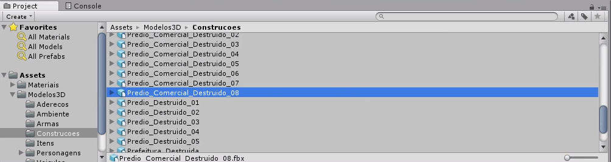
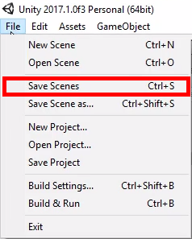

Transcrição
Com a Unity instalada no computador, criaremos um projeto, que é basicamente uma pasta na qual guardaremos tudo que utilizarmos para desenvolver o jogo.
Para criar um projeto no Unity, clicaremos na aba "Projects" e, em seguida, no botão "New", à direita da tela. Carregará uma página de configuração, na qual:
- digitaremos o nome do projeto em "Project name";
- especificaremos onde salvaremos em "Location";
- determinaremos se o jogo será 3D ou 2D, no caso do que estamos desenvolvendo, será 3D.
Essa é uma prévia de como iniciarmos um projeto no programa. Mas, antes de continuar, clicando em "Create projects", cancelaremos para falar sobre o processo de criação, pois temos que considerar alguns passos que precedem a criação do projeto.
Hipoteticamente, fomos contratados para criar um jogo e temos a arte dele criada e enviada por um artista, que está salva em uma pasta. Para utilizá-la abriremos o local em que ela está clicando em "Open", à direita de "New".
Na sequência, selecionaremos a pasta do projeto e clicaremos em "Selecionar pasta" para carregá-la.
Dessa forma, teremos todos os arquivos do projeto no programa. Nele, vemos "Project" com as pastas em "Assets", na parte inferior.
Clicaremos duas vezes na pasta "Modelos 3D". Nela encontraremos mais pastas. Clicaremos em "Contrucoes", na qual estão diversas miniaturas de itens que podemos utilizar. Para visualizar o conteúdo dos itens, podemos utilizar as miniaturas, mas para acompanhar melhor quais estão sendo utilizadas enquanto desenvolvemos, podemos deslizar a barra no canto inferior direito para a esquerda.
Assim, os ícones ficarão organizados em lista, facilitando a leitura do nome dos arquivos.

Se clicarmos nos objetos, à direita abrirá a visualização deles em 3D. Podemos aumentar o tamanho da janela caso esteja pequena:
- posicionando o cursor na borda;
- clicando no desenho de ajuste (uma flecha com setas para cima e para baixo);
- arrastando para cima.
Na visualização, podemos clicar no objeto e rotacioná-lo para ver todos os lados dele.
Temos diversos objetos, mas nenhum está no jogo. Começaremos a inseri-los, seguindo a lógica de que os personagens terão que andar. Assim, adicionaremos um chão para que eles andem em cima. Iremos para a parte da lista que contém "Hotel_Estacionamento_Destruido". Ao clicarmos, na visualização teremos o chão de um estacionamento de hotel.
Se rotacionarmos, veremos que a parte de baixo do chão é invisível, o que não é um problema, considerando que o jogo é visto de cima. Continuando, para inserir o chão no jogo, clicaremos e arrastaremos o objeto para a parte superior esquerda do programa, identificada como "Hierarchy" ("Hierarquia" em português). Na janela superior esquerda do programa, encontramos a aba "Scene", na qual temos a visualização do chão.
"Scene" ou "Cena" é o local em que montaremos as fases do jogo. Nela, colocaremos e organizaremos os objetos. A "Hierarquia" é a listagem dos objetos utilizados em "Cena". Enquanto no projeto temos todos os objetos disponíveis para utilização, em "Hierarquia", estarão somente aqueles que estamos utilizando. Nela, veremos "Main Camera" e "Directional Light", que são padrões da Unity e estarão no topo da lista, sempre que iniciarmos uma fase nova.
Aproveitando que enviamos um objeto com tema de hotel, adicionaremos também "Hotel_Destruido" e "Hotel_Secundario_Destruido", da mesma forma que fizemos com "Hotel_Estacionamento_Destruido".
Em "Scene", veremos que o posicionamento está incoerente. O hotel está na frente do chão, que está no fundo. Precisamos posicioná-lo em cima do chão. Para ativar a opção de movimentar o objeto, teclaremos a letra "W". Aparecerão três setas no objeto selecionado.É possível que algumas estejam ocultas, para visualizar todas, podemos clicar com o botão do meio do mouse e arrastar o objeto até conseguir ver todas.
Caso não utilizem o mouse, é possível arrastar o objeto selecionando a ferramenta identificada com uma mão no canto superior esquerdo da tela e, então, clicando com o botão esquerdo em cima do objeto que desejamos movimentar, podemos posicioná-lo onde quisermos.
Selecionaremos "Hotel_Destruido" em "Hierarchy" e teclaremos "W" para movimentá-lo na Unity. Podemos movê-lo tridimensionalmente, ou seja, em três eixos:
- x, da direita para esquerda e vice-versa;
- z, para frente e para trás;
- y, para baixo e para cima, no qual não mexeremos no momento, pois deixaremos o objeto no chão.
Continuando o posicionamento dos objetos, clicaremos na seta do eixo z, e movimentaremos "Hotel_Destruido" para o fundo do chão. Na sequência, moveremos "Hotel_Secundario_Destruido", teclando "W". Posicionaremos ele próximo a "Hotel_Destruido", obtendo a seguinte imagem:
Podemos rotacionar "Scene", para conferir se o "Hotel_Destruido" está alinhado ao fundo do chão:
- teclando "Alt";
- clicando com o botão esquerdo do mouse;
- arrastando "Scene" ao mesmo tempo.
Veremos que o limite do cenário foi ultrapassado. Assim, para que ele fique dentro da área de "Hotel_Estacionamento_Destruido", clicaremos na seta do:
- eixo z e puxaremos o objeto para frente;
- eixo x, movimentando-o para a esquerda da tela.
Teclaremos "Alt" novamente e rotacionaremos a "Cena" para visualizar a frente dela.
Em seguida, encaixaremos "Hotel_Secundario_Destruido" na área retangular à esquerda de "Hotel_Destruido". Notem que teremos que rotacioná-lo, considerando que ele está desalinhado em relação ao chão. Para rotacionar o objeto, teclaremos "E", ativando a ferramenta de rotação, que também pode ser acionada no canto superior esquerdo da tela, clicando no terceiro botão da esquerda para a direita, indicado com um desenho de duas flechas em rotação.
Após ativar a ferramenta de rotação, devemos selecionar um eixo para evitar que a rotação seja aleatória. Há três linhas coloridas nas quais podemos clicar para selecionar o eixo:
- a azul, referente ao eixo z, para rotacionar para cima e para baixo;
- a vermelha, referente ao eixo x, para rotacionar para a direita ou para a esquerda;
- a verde, referente ao eixo y, para rotacionar de acordo com as laterais do objeto.
No caso, clicaremos em cima da linha verde, para encaixar "Hotel_Secundario_Destruido" na área retangular que planejamos, após teclar "W".

Para ajustá-lo perfeitamente à área de encaixe, utilizaremos os múltiplos de 90ᴼ. Ou seja, rotacionaremos de 90 em 90 graus. Dessa forma, o objeto sempre ficará alinhado. Faremos isso na janela à direita do programa, identificada como "Inspector". Nela, vemos que "Rotation Y" está quase em 90ᴼ (Y-90.181). Deletaremos a parte decimal (.181), deixando somente -90 e teclaremos "Enter". Faremos os últimos ajustes, movimentando com o atalho da tecla "W" até deixá-lo perfeitamente alinhado ao chão.
Agora, sabemos selecionar, inserir e movimentar os objetos. Salvaremos o que fizemos para conseguir utilizar depois, por meio do atalho "Ctrl + S" ou "Command + S", dependendo do sistema operacional ou clicando em "File > Save Scenes".

Nomearemos a fase como game e teclaremos "Enter". Se olharmos a parte inferior esquerda do programa, veremos que ela estará salva em "Project", na pasta "Assets".
Se quisermos criar uma fase nova, podemos clicar em "File > New Scene". Para voltar a visualizar game.unity, basta clicarmos no arquivo, em "Assets", na parte inferior do programa.
Pronto. Iniciamos uma fase do jogo. Toda vez que precisarmos salvá-la, podemos utilizar o atalho "Ctrl + S" ou "Command + S". É muito importante salvar as alterações para não perdê-las, caso o programa feche sozinho ou algum imprevisto aconteça.
A Unity fornece outras ferramentas de navegação que estarão nos exercícios para vocês olharem, em um texto que explica como navegar com outras opções. Mas, as mais comuns são essas que vimos:
- "Alt + arrastar com o mouse" para rotacionar a "Cena";
- clique com botão do meio do mouse para arrastar a "Cena";
- clique com botão direito ou rodar o botão do meio do mouse para aplicar Zoom.